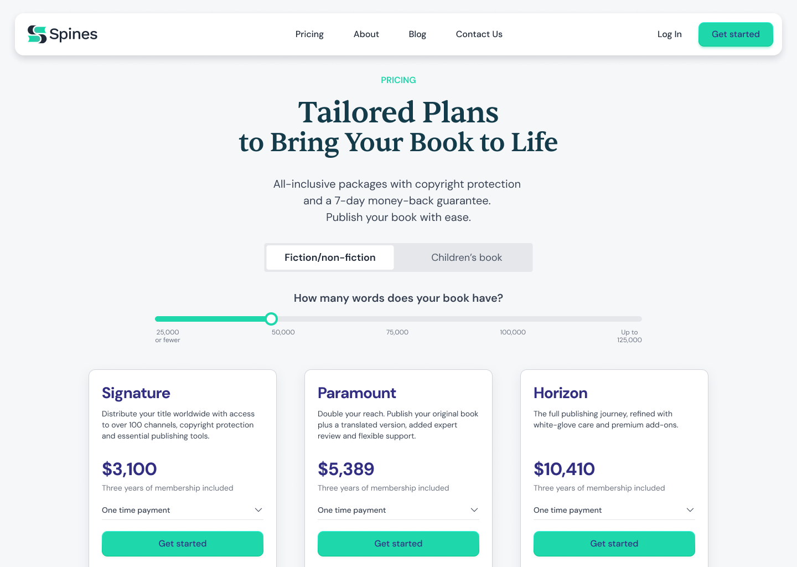
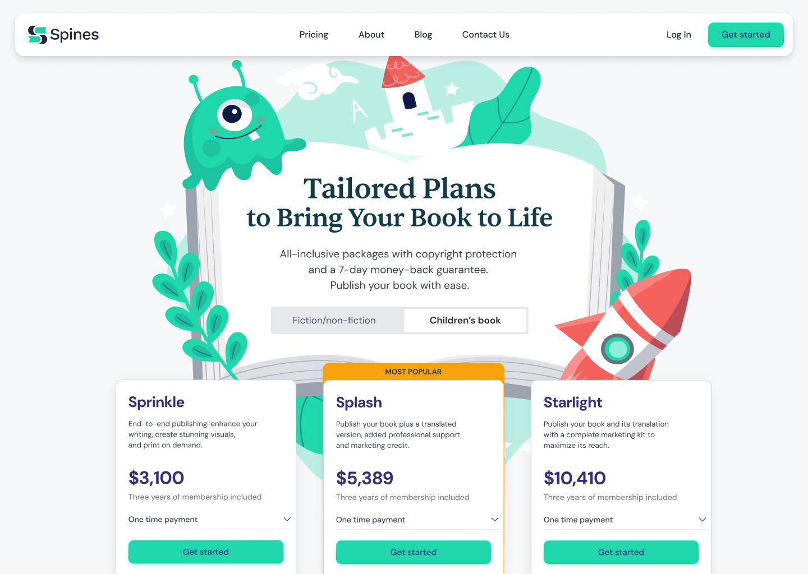
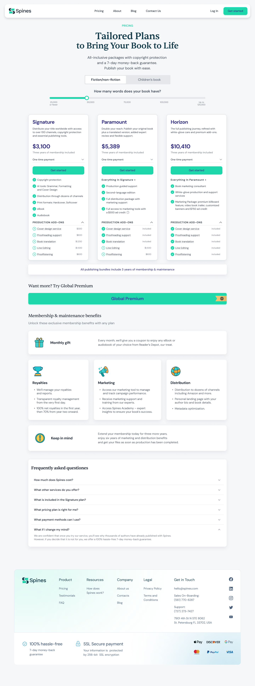
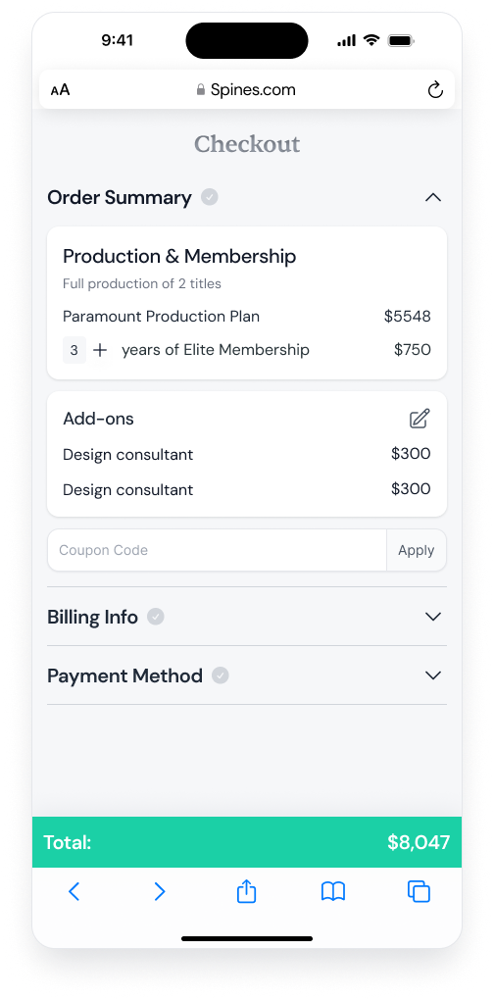
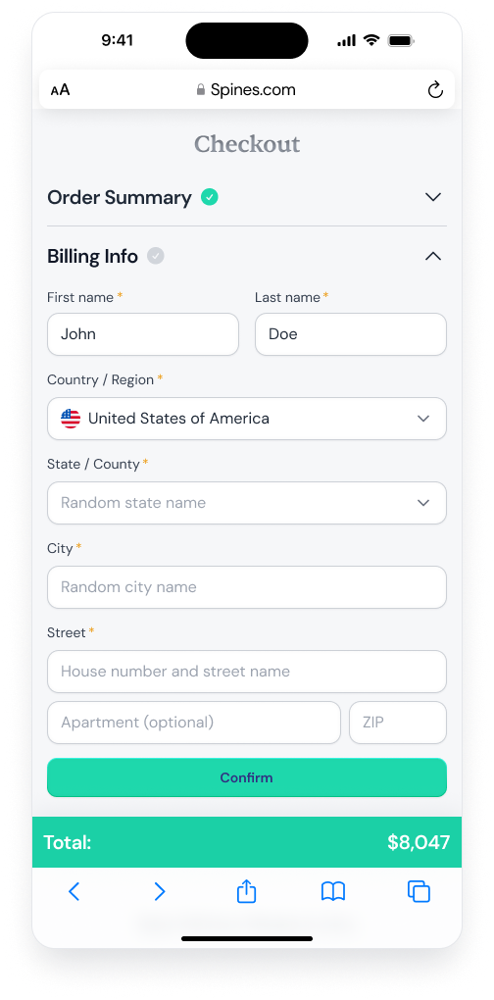
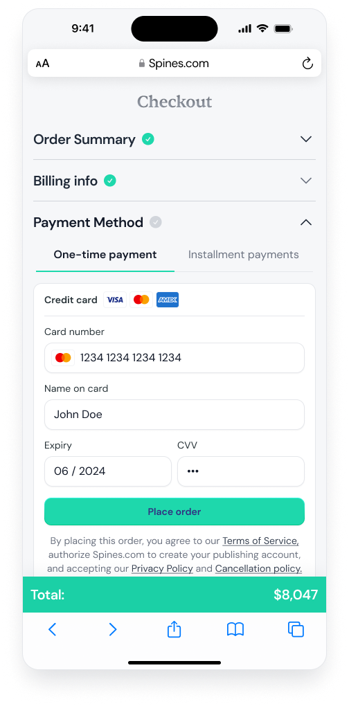
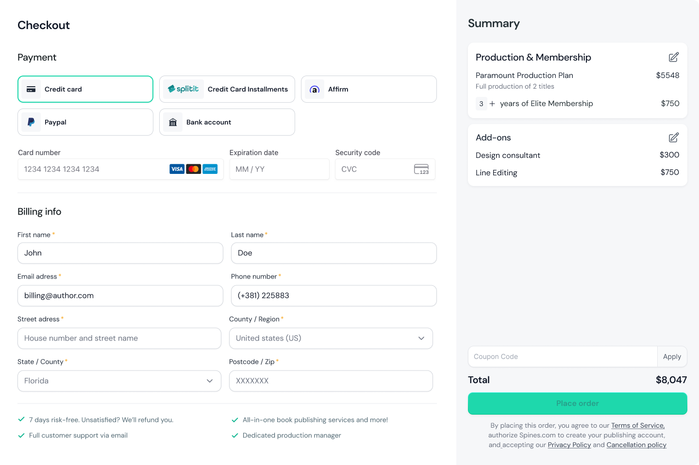
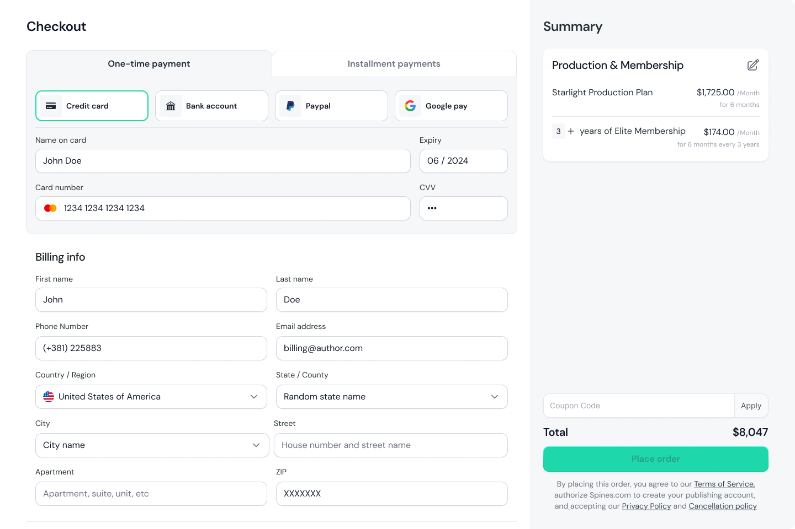

Spines - Pricing & Checkout
- Company
- Spines
- Role
- Product Designer
- Platform
- Web & Mobile
Spines serves two distinct audiences: fiction authors and children's book authors. Each has different pricing structures, plan names, and needs. Both were being sent to the same page. I redesigned the full purchasing experience across web and mobile: from plan discovery through checkout and payment, with dynamic pricing that adapts to manuscript length.
This pricing page shipped and is live on spines.com, with later marketing updates applied after handoff. View live page ↗
Two distinct experiences, one system
Rather than build two separate pages, I designed a single layout system that adapts through a tab toggle. Each tab loads its own pricing structure, plan names, and visual language. For the children's tab, that meant a different colour palette, illustrated plan headers, and copy written specifically for children's book authors, not reused from the general catalog.


Pricing Details
A layered system beneath the surface
The default view is collapsed intentionally: a quick comparison without overwhelming authors up front. Expanding a plan reveals the full depth, every included service, optional add-ons, and upgrade paths, so detail is available but never forced on first-look.
Pricing is dynamic. A word-count slider adjusts cost in real time based on manuscript length, which matters because plan value varies significantly at different word counts. The goal was to make pricing feel relevant to the author's actual project, not generic.
- Dynamic pricing based on manuscript word count
- Three-tier plan hierarchy with clear incremental value
- Full feature lists with add-on services per tier
- Children's plans adapted with custom illustrations and services
- Global Premium tier for maximum-support authors

Mobile Checkout
A guided three-step flow
Checkout opens one step at a time, each section unlocks only when the previous one is complete. Order summary, billing, and payment are surfaced in sequence, keeping the screen focused at a high-stakes moment. The total is always visible at the bottom.



Web Checkout
The same flow, designed for desktop
On desktop, the checkout experience opens up spatially, with payment and billing on the left, with a persistent order summary locked to the right. Both sides stay visible at all times, so authors never lose track of what they're buying while filling in their details.
Two approaches were explored: a traditional layout with all payment methods visible at once, and a tabbed layout that separates one-time payment from installment plans. I recommended the tabbed version: it gives installment payments equal prominence from the start, rather than presenting them as a secondary option buried below the default.


The Approach
The first approach considered was a clean pricing table: three tiers, feature lists, a clear hierarchy. That model works well for software subscriptions with a fixed set of features and a simple purchase path.
It was not the right fit here. Stakeholders had real requirements: add-ons needed to be available directly from the pricing page, and the page needed to support both package comparison and additional service purchases within the same flow. A simple pricing table could not hold that without either hiding important options or overwhelming the page.
The design had to balance three things at once: make the offer easy to understand for authors who are not familiar with publishing services, meet the business and marketing requirements for what the page needed to sell, and support a checkout path that reflects how Spines actually works. That is what shaped the final structure.
Outcome
What started as a design exercise during the hiring process became the pricing page Spines uses publicly. The redesign replaced a more explanation-dependent experience with a structured self-serve system - one where authors can compare packages, understand what's included, and move toward purchase without needing a sales conversation first.